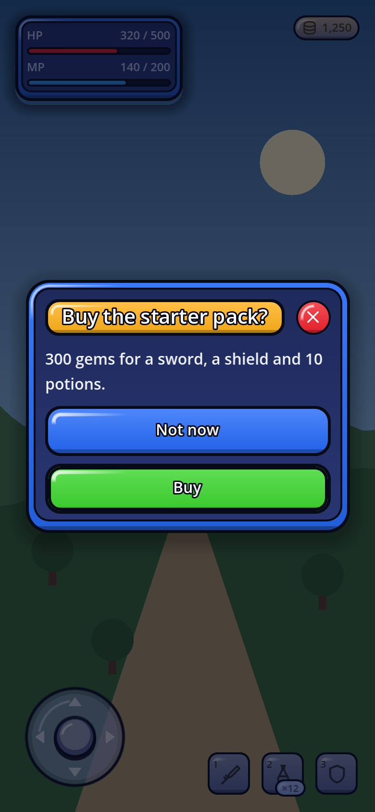

프리셋 하나가 이 셋을 묶는다. 비워 둔 칸은 기본값으로 떨어진다.
| 층 | 무엇을 정하나 | 바꾸는 법 |
|---|---|---|
Theme |
색·치수·글자 크기, 그리고 엔진이 그려 주는 것의 모양 — 버튼 패널, 입력 칸, 탭, 토글 그림 | .tres 를 만들거나 tools/make_theme.py 로 생성 |
GoSkin |
코드가 직접 그리는 것의 모양 — 조이스틱, 퀵슬롯 패널, 코치마크 링, 칩, 스켈레톤, 구분선 | 상속해서 바꾸고 싶은 메서드만 덮어쓴다 |
GoIconSet |
이름으로 부르는 아이콘 — 기본 84종, 또는 그 위에 각인풍 16종을 얹은 중세 세트. 텍스처 세트든 아이콘 폰트든 같은 이름으로 부른다 | 세트를 꽂거나 몇 개만 덮어쓴다 |
StyleBoxFlat 의 모서리는 둥근 것뿐이다. 반경을
0 으로 두면 직각이고 그 사이는 없다. 사선으로 잘린 모서리도, 한쪽만 굵은 강조선도, 바깥으로 번지는 발광도
엔진이 그려 주지 않는다. 게다가 조이스틱과 코치마크는 _draw() 로 직접 그리므로 테마가
아예 닿지 못한다.
고르기
GoUi.use_preset(GoThemePresets.SCIFI_DARK)이 한 줄이 테마·스킨·아이콘을 함께 바꾼다. 에디터에서 고르려면
프로젝트 설정 → Gohud → Theme → Preset, 설정 리소스에서는 GoConfig.preset 이다.
한 칸만 내 것으로
GoUi.use_preset(GoThemePresets.SCIFI_DARK)
GoUi.config.icons = my_icons # 아이콘만 내 세트로, 나머지는 프리셋 그대로theme·skin·icons 를 직접 채우면 그쪽이 프리셋보다 우선한다.
기본 제공 프리셋 열넷
| 프리셋 | 패널 | 스킨 · 아이콘 |
|---|---|---|
default_dark · default_light | 둥근 StyleBoxFlat 패널과 단계별 그림자. 강조 버튼은 떠 있다가 누르면 가라앉는다 | GoSkin · 기본 아이콘 84종 |
scifi_dark · scifi_light | 모서리를 자른 GoStyleBoxCut 패널, 네온 강조선과 발광, GoStyleBoxBracket 포커스 표식 | GoSkinSciFi — 육각 조이스틱 · 기본 아이콘 |
medieval_dark · medieval_light | 철·가죽 또는 양피지 질감의 GoStyleBoxMedieval 단조 프레임, 메뉴에만 리벳과 모서리 장식 | GoSkinMedieval · 기본 위에 각인풍 16종 |
material_light · material_dark 신규 | 앱 화면용 Material 3 Expressive — 48dp 터치 영역 안의 40dp 알약 버튼, 28dp 대화상자, 채운 카드, 외곽선 입력란, Expressive 슬라이더. 앱 컴포넌트(내비게이션 바·앱 바·FAB·검색 바·칩·진행 표시·날짜 선택기)는 M3 컴포넌트 토큰을 따른다 | GoSkinMaterial · 기본 아이콘 |
kids_light · kids_dark 신규 | 어린이용 — 장난감 상자: 굵은 테두리와 누르면 쏙 들어가는 단단한 턱이 달린 키, 움푹한 입력칸, 방울 탭, 젤리 막대, 컨트롤마다 다른 크레파스 색, 사탕 같은 퀵슬롯, 스티커 배지, 무지개 조이스틱과 크레파스 차트. 치수와 프로젝트 글꼴은 그대로다. | GoSkinKids · 기본 아이콘 |
arcade_light · arcade_dark 신규 | GoStyleBoxArcade 가 그리는 오락실 게임기: 모든 키를 위에서 아래로 짙어지는 그라데이션, 흰 광택, 누르면 쏙 들어가는 턱으로 칠해 남색 잉크 테두리 안에 담고, 라벨은 잉크 테두리를 두른 흰 글자다 — 주 키는 초록, 일반 키는 파랑, 위험은 빨강, 작은 키는 라벤더색. 판은 옅은 안쪽 면을 색 테로 두른 두꺼운 판이고, 창에는 금색 제목 배너와 둥근 빨간 닫기 키가 붙는다. | GoSkinArcade · 기본 아이콘 |
comic_light · comic_dark 신규 | GoStyleBoxComic 이 그리는 만화책의 칸: 모든 면에 굵은 잉크 테두리와 딱딱한 그림자가 있고, 면을 누르면 그림자가 사라진다. 잉크를 입힌 토글·체크 박스·슬라이더 손잡이, 창에는 노란 제목 캡션. 테두리 굵기, 그림자 크기, 그림자를 아예 보일지는 GoConfig 설정이다. | GoSkinComic · 기본 아이콘 |
열네 가지를 나란히
프리셋 이름만 바꾼 같은 갤러리 화면이다 — 위젯 코드는 한 줄도 다르지 않다. 모두 세워 쥔 폰, 390×844 다.

default_dark
default_light
scifi_dark
scifi_light
medieval_dark
medieval_light
material_light
material_dark
kids_light
kids_dark
comic_light
comic_dark
arcade_light
arcade_dark중세: 철·가죽·양피지
medieval_dark는 어두운 철·가죽·고금색, medieval_light는 양피지·잉크 색상이다.
기존 위젯에 GoSkinMedieval을 적용하며, 16종의 각인풍 아이콘과 기존 탐색 아이콘을 함께 쓴다.
GoUi.use_preset(GoThemePresets.MEDIEVAL_DARK)
# 또는: GoUi.use_preset(GoThemePresets.MEDIEVAL_LIGHT)UI를 만들기 전에 선택한다. GoConfig.theme, skin, icons의 직접 설정은 우선한다.
res://addons/gohud/examples/medieval/medieval.tscn을 열고 F6을 누르면 캐릭터·인벤토리·퀘스트 예제를 실행한다.
버튼으로 두 프리셋을 전환하거나 아이템 설명을 열 수 있다.


메뉴는 모서리 리벳과 작은 장식으로 꾸미고, 상시 HUD는 테두리를 절제한다.
HP·마나·스태미나에는 빨강·파랑·올리브색 채움을 쓴다. Cinzel은 제목·부제에만 적용하고 본문은 기존 글꼴을 유지한다.
글꼴 라이선스는 assets/fonts/cinzel/OFL.txt에 포함되어 있다.
각인풍 세트는 bag·book·box·coin·crown·flag·
heart·key·map·potion·shield·star·
sword·user 14종을 다시 그리고 scroll·seal 을 더한다.
나머지 이름은 기본 세트로 떨어지므로 close·settings 는 어느 프리셋에서나 같은 그림이다.
Cinzel 은 라틴 문자만 담으므로, 다른 문자의 제목에는 shape.fonts 로 따로 글꼴을 준다.
DPITexture 로 임포트되는지,
실제 퀵슬롯이 스킨을 쓰는지, 복사한 스킨의 다이얼을 바꾸면 프리셋은 그대로 두고 슬롯에 반영되는지,
그리고 다른 프리셋으로 돌아가면 기본·sci-fi 모양이 되돌아오는지.
나만의 왕국 만들기
python3 addons/gohud/tools/new_theme.py kingdom --from medieval_dark
# themes/palettes/kingdom.json 수정 후:
python3 addons/gohud/tools/make_theme.py kingdom
godot --headless --path . --import
# 위젯을 만들기 전에 GDScript에서:
GoUi.use_preset(&"kingdom")JSON 테마를 부모로 상속할 수 있다. 생략한 값과 아이콘 세트는 부모를 따르며 순환 상속은 오류로 알려 준다.
| 설정 | 효과 |
|---|---|
shape.material | 0: 철 · 1: 가죽 · 2: 양피지. 표면 자국의 모양을 조절한다. |
shape.grain_alpha | 질감의 투명도. 0이면 깨끗한 표면이다. |
shape.ornament_scale · shape.bevel_strength | 메뉴 모서리 장식의 크기와 베벨 반사의 강도. |
shape.fonts | title, subtitle, caption, body, button별로 애드온 내부 res:// 글꼴 경로를 지정한다. 생략한 역할은 부모 글꼴을 따른다. |
skin.dials | 퀵슬롯 반경·리벳·질감·빛 반사. 아래 표에 모든 이름과 기본값이 있다. |
Material 3: 앱 화면을 위한 생김새 신규
material_light 와 material_dark 는 Material 3 Expressive 를 gohud 에 들여온다 — M3 컴포넌트의
모양·크기·글자를 옮겼고, 숫자는 전부 공식 M3 토큰 세트(material-web,
tokens/versions/latest)에서 읽었다. 게임 메뉴보다 앱처럼 느껴져야 하는 화면에 쓴다:
상점, 받은 편지함, 계정·설정 페이지, 순위표, 컴패니언 앱.
GoUi.use_preset(GoThemePresets.MATERIAL_LIGHT)
# 또는: GoUi.use_preset(GoThemePresets.MATERIAL_DARK)material_lightmaterial_dark
GoDialogs · material_light
GoDialogs · material_dark바뀌는 것
| 부분 | Material 3 에서는 |
|---|---|
| 버튼 | 알약 모양(완전히 둥근 모서리). 판은 높이 40dp 로 48dp 터치 영역 가운데에 놓이므로 누르는 영역은 줄지 않는다. compact 버튼의 판은 32dp 다. 문구는 굵기 500 의 Roboto 다. |
| 대화상자와 시트 | 28dp 모서리(extra-large), 24dp 안쪽 여백, 24sp 헤드라인 — GoDialogs, GoSurface, GoSheet, 그리고 그 위에 지은 모든 팝업. |
| 카드 | 12dp 모서리와 16dp 안쪽 여백의 채운 카드. |
| 입력란과 슬라이더 | 외곽선 입력란, 손잡이가 높은 Expressive 슬라이더. |
| 칩과 분절 선택 | 8dp 모서리(small). |
| 앱 컴포넌트 | GoNavBar, GoAppBar, GoFab, GoSearchBar, 칩, GoProgress, GoDatePicker 는 M3 컴포넌트 토큰을 따른다. |
| 글자 | 제목·부제·캡션·버튼에는 함께 들어 있는 Roboto 를 쓴다. 본문은 프로젝트 글꼴을 그대로 두므로 한국어·일본어·중국어·아랍어도 그대로 그려진다. |
| 불투명도 | 모든 패널이 불투명하다 — M3 의 표면은 단단하다. (기본·sci-fi·중세 패널은 80% 불투명이라 게임이 비쳐 보인다.) |
| 스킨 | GoSkinMaterial: 서랍은 M3 모달 사이드 시트, 콘솔 면은 M3 플로팅 툴바이고, 배너는 surface_container_low 위에 놓인다. |
tools/check_contrast.py 가 두 생김새를 다른 모든 생김새와 똑같이 잰다.
Roboto 는 SIL Open Font License 1.1(assets/fonts/roboto/OFL.txt)을 따르며, Material 프리셋에서만
쓴다.
어린이: 장난감 상자 신규
kids_light(크림과 복숭아색 바탕에 포도색 강조)와 kids_dark(블루베리 바탕, 햇살 같은 노란
강조, 민트색 알약)는 어린이 게임과 학습 앱을 위해 만든 생김새다 — 통통하고, 밝고, 말랑해서 작은 손가락이
누르고 싶어지는 모양이다.
GoUi.use_preset(&"kids_light")
# 또는: GoUi.use_preset(&"kids_dark")kids_lightkids_dark
GoDialogs · kids_light
GoDialogs · kids_dark바뀌는 것
| 부분 | 어린이 생김새에서는 |
|---|---|
| 모든 면 | GoStyleBoxJelly 가 그리는 젤리 사탕: 굵은 테두리, 누르는 모든 것 아래의 단단한 턱, 위는 밝고 아래로 갈수록 짙어지는 몸통, 왼쪽 위의 흰 광택. 키, 목록 줄, 접히는 제목, 입력란, 막대, 슬라이더, 패널이 모두 이 옷을 입는다. |
| 누르기 | 턱이 사라지고 면이 그 자리로 가라앉은 뒤, 젤리처럼 말랑하게 찌그러진다 — 잠깐 넓고 납작해졌다가 탄력 있게 되돌아온다. gohud 가 만드는 모든 버튼에서 일어나며, reduce_motion 이 끈다. |
| 입력란, 탭, 막대 | 입력란은 같은 젤리를 안쪽으로 뒤집은 움푹한 우물이다. 탭은 방울이고, 막대에는 젤리 광택이 있다. |
| 색 | 컨트롤 종류마다 자기 크레파스 색을 입는다. 다른 모든 생김새와 같은 생성기가 고르므로 모든 대비 검사를 그대로 통과한다. |
| 창 | 창 제목 뒤에 햇살 같은 노란 리본(밤에는 민트색)이 깔리고 — 제목은 한 줄에 머물도록 15 까지 줄어든다 — 위험 크레파스 색에 흰 × 가 그려진 둥근 사탕 닫기 버튼이 붙는다. |
| 스킨 부품 | GoSkinKids: 퀵슬롯은 쿨다운 동안 가라앉는 사탕 블록, 배지는 스티커, 칩과 내비게이션 알약은 작은 젤리, 아바타는 둥근 사탕, 조이스틱은 무지개, 차트는 크레파스, 경고와 알림은 단단한 테두리가 있는 스티커 메모다. |
| 불투명도 | 패널, 카드, 알림, 팝업이 불투명하다. |

나만의 장난감 상자 만들기
python3 addons/gohud/tools/new_theme.py candy --from kids_light
# themes/palettes/candy.json 수정 후:
python3 addons/gohud/tools/make_theme.py candy
GoUi.use_preset(&"candy")코믹: 굵은 잉크 신규
comic_light(종이 크림색 페이지 위의 흰 패널, 코발트색 주 색)와 comic_dark(밤 페이지 위의
슬레이트색 패널, 크림색 테두리, 노란 주 색)는 모든 면을 만화책의 칸처럼 그린다 — 굵은 잉크 테두리 뒤에 딱딱한
그림자가 깔린다.
GoUi.use_preset(&"comic_light")
# 또는: GoUi.use_preset(&"comic_dark")comic_lightcomic_dark
GoDialogs · comic_light
GoDialogs · comic_dark바뀌는 것
| 부분 | 코믹 생김새에서는 |
|---|---|
| 모든 면 | GoStyleBoxComic 이 그린다: 잉크 색의 굵은 테두리 안에 표면 색을 채우고, 오른쪽 아래로 딱딱한 그림자를 드리운다. 키, 목록 줄, 입력란, 탭, 막대, 슬라이더, 패널, 팝업이 모두 이 옷을 입는다. |
| 누르기 | 그림자가 사라지고 면이 그 자리로 가라앉는다. |
| 컨트롤 | 토글, 체크 박스, 라디오 버튼, 슬라이더 손잡이도 잉크를 입고, 저마다 작은 그림자를 단다. |
| 창 | 창 제목 뒤에 노란 캡션이 깔리고, 잉크를 입힌 둥근 닫기 버튼이 붙는다. |
| 스킨 부품 | GoSkinComic: 퀵슬롯, 칩, 배지, 아바타, 알림, 내비게이션 바, FAB, 날짜 칸이 잉크를 입는다. 조이스틱 손잡이는 그림자를 드리우고, 차트는 굵은 원색을 쓴다. |
| 불투명도 | 패널, 카드, 알림, 팝업이 불투명하다. HUD 카드는 92% 불투명하다. |
잉크와 그림자 설정
GoConfig 설정 셋이 모든 코믹 면을 한꺼번에 바꾼다. 다시 만드는 것은 없다 — 값을 넣는 대로 화면이 다시 그려진다.
GoUi.config.comic_border_width = 2.0 # 테두리(dp) — 기본값 3
GoUi.config.comic_shadow_size = 6.0 # 그림자(dp) — 기본값 4
GoUi.config.comic_shadow = false # 어디에도 그림자 없음위젯 하나는 설정과 상관없이 따로 갈 수 있다:
GoStyle.comic_shadow(skip_button, false) # 이 버튼은 납작하게
GoStyle.comic_shadow(card, true, true) # 이 카드와 그 안의 모든 것은 그림자 유지
GoStyle.comic_border(title, 5.0) # 이것만 테두리를 더 굵게
나만의 코믹 만들기
python3 addons/gohud/tools/new_theme.py inked --from comic_light
# themes/palettes/inked.json 수정 후:
python3 addons/gohud/tools/make_theme.py inked
GoUi.use_preset(&"inked")아케이드: 칠한 키와 두꺼운 판 신규
arcade_light(하늘색 페이지 위의 흰 판)와 arcade_dark(밤 페이지 위의 남색 판)는
모든 화면을 오락실 게임기처럼 꾸민다: 모든 키를 칠한다 — 위는 밝고 아래로 갈수록 짙어지는 그라데이션,
흰 광택 한 줄, 누르면 쏙 들어가는 턱을 남색 잉크 테두리 안에 담는다 — 그리고 모든 판은 두껍다, 옅은 안쪽 면을
색 테가 둘러싼다.
GoUi.use_preset(&"arcade_light")
# 또는: GoUi.use_preset(&"arcade_dark")arcade_lightarcade_dark
GoDialogs · arcade_light
GoDialogs · arcade_dark바뀌는 것
| 부분 | 아케이드 생김새에서는 |
|---|---|
| 키 | GoStyleBoxArcade 가 그린다: 그라데이션 몸통, 왼쪽 위 모서리를 감는 흰 광택, 더 짙은 턱, 남색 잉크 테두리. 주 키는 초록, 일반 키와 선택된 탭은 파랑, 위험 키는 산호색과 빨강, 작은 키와 나머지 탭은 라벤더색이다. |
| 라벨 | 칠한 키마다 잉크 테두리를 두른 흰 글자. 모든 칠한 색은 그라데이션의 어느 높이에서든 그 라벨이 읽힐 때까지 옮겨진다 — WCAG 처럼 테두리를 글자의 일부로 쳐서 4.6:1 이상. |
| 누르기 | 턱이 사라지고 키가 제자리로 쏙 들어갔다가 다시 튀어나온다. |
| 판 | 패널, 카드, HUD 카드, 팝업은 두껍다: 자기 광택과 턱을 지닌 색 테(창은 6dp, 카드와 HUD 카드는 4, 메뉴와 알림은 3)가 잉크 선을 두른 옅은 안쪽 면을 둘러싼다. 이를 담으려고 안쪽 여백이 조금 늘어나므로 글자가 테에 닿지 않는다. |
| 입력란과 막대 | 입력란과 막대의 홈은 움푹 팬 안쪽 면이다. 막대의 채움은 자기 색의 밝은 채움색으로 칠한 광택 튜브다. |
| 창 | 잉크 테두리를 두른 흰 제목이 얹힌 금색 배너, 흰 X 가 그려진 둥근 빨간 닫기 키. |
| 스킨 부품 | GoSkinArcade: 퀵슬롯과 칩은 키캡이고, 쿨다운 중인 슬롯은 금색 테가 켜지며, 배지는 밝은 판, 알림은 자기 색 테를 두르고, 선택된 카드는 금색 테가 켜진다. FAB 는 금색 키, 조이스틱은 화살표 넷이 달린 광택 패드다. |
| 불투명도 | 패널, 카드, 알림, 팝업이 불투명하다. HUD 카드는 94% 불투명하다. |
키 하나에 자기 색 칠하기
테마는 키를 종류별로 칠한다. 키마다 제 색을 원하는 메뉴는 하나씩 칠하면 된다 — 호버 면은 조금 더 밝게, 눌린 면은 조금 더 짙게 나오고, 비활성 면은 흐린 채로 남는다:
menu.add_child(GoStyle.arcade_paint(GoStyle.button("Resume", _resume, GoStyle.Tone.PRIMARY), Color("#4ACB3E")))
menu.add_child(GoStyle.arcade_paint(GoStyle.button("Shop", _shop), Color("#FF8A1E")))
GoStyle.arcade_paint(stage_card, Color("#E3343D"), true) # 판의 테와 그 안의 모든 키arcade_paint() 가 아무 일도 하지 않는다.

나만의 아케이드 만들기
python3 addons/gohud/tools/new_theme.py cabinet --from arcade_light
# themes/palettes/cabinet.json 수정 — *_vivid 색이 칠하는 색이다 — 후:
python3 addons/gohud/tools/make_theme.py cabinet
GoUi.use_preset(&"cabinet")